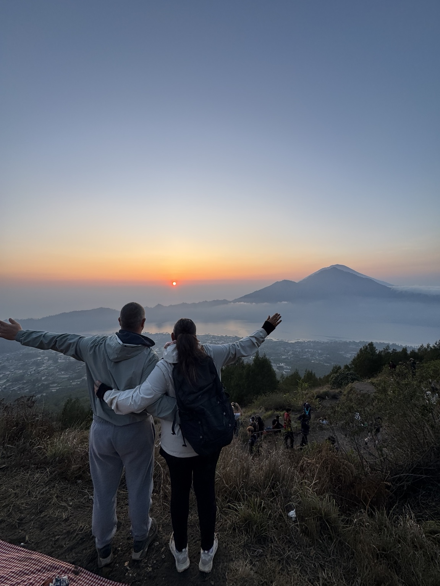

HOT SPRING COMBINATION
Mount Batur Sunrise Trekking
Start before dawn with a local guide and hike toward Mount Batur’s sunrise viewpoint. Enjoy views across the volcanic landscape and Lake Batur, then relax in warm natural hot spring pools after your trek. Trekking duration, entry inclusions, and final price follow the selected package.
Add a natural hot spring visit to this adventure. Final pricing is calculated by the selected package calculator.
CHECK PRICE & BOOK